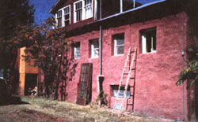
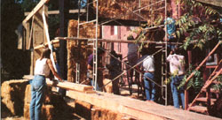
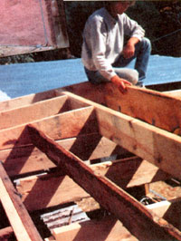
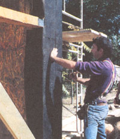
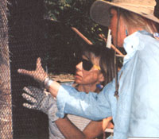
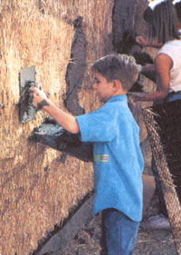
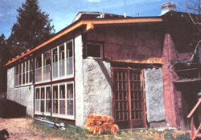

EARTH DIARY
In response to rising lumber costs, advocates of alternative building materials present their case.
If you want to build a new house out of wood, you're in for sticker shock when you reach the lumberyard. Lumber has doubled in price in the last year alone, and prices may continue to rise as oldgrowth forests dwindle and/or more areas are declared off-limits to loggers in order to protect endangered species. A 2 x 4 that cost approximately $1.50 last summer now runs as high as $3. Faced with an increase like that, a builder must choose between waiting out the building season or constructing a much smaller house for the same price. A growing number, however, are driving past the lumberyard to pick up their housing materials at the local feed store-stuffing their walls with straw bales and avoiding wood when they build their new homes. In the process, they are saving a wad of cash.
You can build a home for as little as $4,000 by using plastered straw-bale construction techniques instead of wood in your walls. In many parts of the country, straw bales can be bought off the farm or feedlot for as little as 504 per bale, especially in areas of the country where straw is considered waste and is burned every year. Building techniques are simple, forgiving, and easy to learn. In fact, the most difficult part of straw-bale construction may be getting past the mythology of the "Three Little Pigs," which maligns straw as a shoddy building material.
Matts Myhrman and Judy Knox know all too well about people's skeptical reactions. These plastered straw-bale construction pioneers publish The Last Straw, a newsletter that reports on techniques and tips for building homes out of straw bales. The two travel the world talking the praises of these homes, taking inventory of straw-bale houses built around the world and directly addressing people's questions and concerns.
In their travels the two discovered that buildings have been constructed with straw bales in this country ever since necessity spawned experiments in Nebraska at the turn of the century. In the state's Sandhills, located in northwestern Nebraska, early settlers turned to an abundant resource (straw) to replace a scarce resource (wood) for their homesteads. At the same time, hay balers were just coming into common use on farms in the area.
Most of these homes were like the one built by Leonard and Tom Scott-a three bedroom, two-bathroom, 900-squarefoot house with a 600-square-foot basement that was finished in 1938. Many homes in Nebraska towns such as Alliance, Arthur, and Dannebrog that have been built from straw bales are still standing today.
Plastered straw-bale construction was also used for other structures such as farm buildings, schools, offices, and grocery stores. However, many Nebraskans were concerned that they weren't living "civilized" existences in straw homes; so when wood became easily attainable again in the area, home builders resorted once again to traditional stick houses.
Critics of straw-bale construction-many of whom would prefer builders use wood, brick, and blocks for their homescan tick off a list of potential hazards with the material. They first point to the fire hazard of straw, a combustible material in walls. Actually, straw bales are safer than wood because the bales are compressed and tend to smolder if exposed to fire.
In a test of the fire rating of a house built with straw bales by the National Research Council of Canada, the plaster surface withstood temperatures of about 1,850°F for two hours before any cracks developed. According to the Canada Mortgage and Housing Corporation, "The straw bales/mortar structure wall has proven to be exceptionally resistant to fire. The straw bales hold enough air to provide good insulation value, but because they are compacted firmly, they don't hold enough air to permit combustion."
Straw-bale homes can burn just like any other house though, and special attention must be paid to electrical wiring details. Adding a firebreak at the top of the walls can preclude the threat of lightning-caused roof fires or chimney fires. Fires in older homes present problems not because they spread quickly but because they smolder and are difficult to extinguish. According to Matts Myhrman, "Trying to burn a well compacted bale is rather like trying to burn a phone book."
Another worry is that straw walls will offer tempting nesting sites for mice and other vermin. But in plastered straw-bale construction, the straw bales are enclosed in plaster or stucco and offer no more enticement to pests than a framed wall enclosed with drywall.
In addition, homes built with straw bales may substantially reduce your energy bills. Straw is a natural form of one of the most common residential insulations in use in homes today: cellulose. Because bales are compact and approximately 20" wide, they can result in thicker than normal walls with high R-values, even more so when proper insulation is added.
R-values, a measure of a material's thermal resistance (how well it resists heat passing through), are established by the American Society of Heating, Refrigeration, and Air-Conditioning Engineers (ASHRAE). This nonprofit organization holds more than 50,000 engineers and others; they establish these standards in order to encourage the adoption of energy-efficiency measures and provide standards with which to evaluate the industry practice.
Straw's actual R-value is approximately 2" to 2 1/2" and can result in R-values of close to R-40 in walls of 20"-wide bales. This stacks up pretty well compared to some of the more conventional forms of insulation. For instance, loose-fill cellulose insulation has an R-value per inch of approximately 3.5. Fiberglass batting has an R-value per inch of approximately 3.2.
Normally, home builders settle for less and would not even consider insulating a wall to the level of R-40 because of the high cost of materials. It's important to note that the doors, windows, and ceiling are independent of the straw-bale construction and call for their own insulation. (For some suggestions, see "Home Insulation for the 1990s" on page 45.)
"The insulation factor of straw bale is definitely the key for us," says Athena Steen, who lived in a straw-bale house for five years in New Mexico before moving to Arizona. Her present house, which is adobe, came with the property she now lives on, but she plans to build another straw-bale house soon. "The straw-bale house stayed a lot cooler throughout the summer and a lot warmer during the winter. We heated our house with wood, and we used approximately half a cord for the whole winter. In a frame house we would have used at least a full cord."
Even more energy savings is possible when solar gain is incorporated into the home's design. The Steens, for example, used south-facing glass and adobe interior walls to catch and store heat from the sun.
Catherine Wanek of Kingston, New Mexico, built a wall of double paned windows facing south that collect the low angled winter sun when she needs extra heat. An opaque roof reflects the overhead sun above. Catherine kept the east and west walls solid straw bales, except for the doors and windows.
RECRUITING HELP: One big advantage of building with straw bales is that practically anyone can help out.
Old-timers in Nebraska straw-bale homes have commented on how quiet these homes are inside, due to the thick walls. This is true even when the houses face howling prairie winds. Modern strawbale structures are no less quiet, and are probably more so thanks to better-built windows and doors today.
Just ask the Steens. They had a creek in front of their home that would roar loudly when the water was high. "When we went inside the straw-bale house, you couldn't hear the creek at all," says Athena.
Many feel that the most attractive aspect of building with straw bales is the potential savings that comes from using such inexpensive material. Bales are available in most parts of the country ranging from a cost of $1.50 to $4 a bale for those that are delivered to the building site.
A comfortable home of 2,500 square feet would require approximately 400 bales. A house built with wood studs that would have cost roughly $30,000 can be built for as little as $5,000 using the straw bales. Of course, these prices assume that you will be building the entire structure the old-fashioned way-yourself, recruiting family, friends, and those who want building experience for free. Costs could jump a couple of thousand dollars if you decided to hire outside labor for the building and plastering.
As for its strength and durability, straw in bales has been tested both in the laboratory and out in the field. The proof is in the pudding: Houses built with the bales more than 90 years ago are still standing strong as ever today. In fact, one house located in Wyoming withstood an earthquake that registered 5.0 on the Richter scale, indicating that straw may just be a more desirable building material for areas that are susceptible to earthquakes. That house is still occupied by the same family, Charles and Mary Bruner and their son Phillip, who was born there and grew up in that house.
"The earthquake was in the 1970s and it was either 5.3 or 5.8, I'm not sure. But I am sure there wasn't a single crack in the house," says Phillip.
The Bruners built their straw-bale house in 1949, the year Phillip was born, as a "temporary" residence; they've been living there ever since. Charles Bruner got the idea from a neighbor who had built a storage shed using straw bales. When asked what it was like to live in their house, Phillip Bruner replies enthusiastically.
"You can live in this house comfortably during the summer; it stays nice and cool. We have never needed any air conditioning, and in summer we get days up in the 90s. Also, last winter I only turned our small bedroom heater on twice. If I had to guess how our utility bills compare to those of our neighbors, I'd have to say our bill is about half."
Compression tests have also demonstrated that straw-bale walls can handle compressive loads several times greater than standard wooden walls. In Tucson, Arizona, a more detailed study is currently underway to examine the results of tests that showed that one single bale could withstand a load of 10,000 pounds per square foot. This would be similar to one straw bale supporting the weight of two dozen pickup trucks without breaking.
Building a home with straw bales isn't rocket science. Some feel the biggest plus is the pride obtained by completing the labor without professional help. Catherine Wanek would be the first to agree. She built her dream greenhouse addition to her bed-and-breakfast lodge with the help of 20 people-all friends, family members, and those who simply wanted to obtain hands-on experience.
"I was inspired after hearing about the success of Kate Brown, a New Mexican potter who built her own straw-bale studio;" Catherine says. She put her structure up in two days-roof and all-mainly with the help of women all over 60. Talk about empowering!
Even the most difficult techniques can be learned in less than two weeks of study, and the majority of knowledge needed can be gained in a few hours. There are two basic approaches: using the bales to build load-bearing walls, as the early settlers of Nebraska did, and using post-and-beam construction to take the load off the walls, which is preferred by code officials.
The straw bales are stacked in interlocking rows like bricks and are often secured to the foundation with rebar, usually one or two pieces per bottom bale. Then the rest of the bales in the wall are secured using rebar pins or wooden dowels. The bale walls should then be covered with chicken wire for further reinforcement.
The last step is to smear the mesh with stucco or plaster as finishing. Some builders have opted to leave their strawbale structures unfinished, but these have often been temporary outbuildings. It's a bad idea for a permanent structure because it invites problems with fire, nesting pests, and the unwelcome feeding frenzies of horses, cows, deer, or elk.
Of the more than 100 plastered strawbale homes built in the United States so far, most have been constructed in rural areas of the Southwest beyond the jurisdiction of building-code officials. Meeting local building codes may not be a problem for plastered straw-bale homes planned for rural areas, but it's important to work with local officials if you plan to build in zoned areas in larger communities.
Because straw-bale homes are different, code officials will need to be convinced of the building material's durability and safety. As David Bainbridge, restoration ecologist and adjunct faculty member at San Diego State University, points out, if log homes had not been built in this country for more than a century, they probably wouldn't be allowed by many buildingcode officials as well.
Bankers and insurance companies are another group that home builders often have to work with if they want to obtain a mortgage, financing for building or later selling their home, or home insurance. A plastered straw-bale home, especially one that is built without load-bearing walls, should meet the same codes and qualify for the same insurance coverage that covers other framed, stucco-covered homes.
Another possible approach, due to the low cost of building a house with plastered straw bales, is to avoid the need for a mortgage by saving and paying as you go. The original straw-bale homes were built where banks were as scarce as wood. As these homes become more common, however, both code officials and financiers should look more favorably on them.
The best way to start any house is by drawing up a floor plan to visualize how your straw-bale house will look. Then you should practice construction by building a model of your home out of Styrofoam (a great way to reuse it). This should be completed before you even begin to select your bales. After all, it's much better to make mistakes carving up your polystyrene model than to find out your idea won't fly halfway into building a wall section.
When you have worked out exactly how you want your house to come together on the model, it's time to pick out your materials.
Locate a source of straw bales in your area. Bales are usually widely available from local farmers, ranchers, or feed-supply stores about the middle of June, when winter wheat is harvested. Says Catherine Wanek, "Finding bales in August turned out to be rather difficult. At one point I even contemplated shipping in straw from Arizona or Colorado, but I finally located a pile of oat straw in New Mexico about 80 miles away. I'd recommend people search out a local famer before he harvests and having him deliver."
Straw, usually wheat, oats, or barley, may include other grasses such as rye or wheat grass. Check the bales you intend to use, making sure they are dry and compact. When you negotiate the price of your bales, make sure the delivery to your budding site is included in the cost.
Your next step is to make the concrete footings for your house. These footings should be made to the dimensions of your bales. For example, you will need an 18footing for a two-wire bale footing. If you err one way or another, it is better to make the footings bigger. Then, you can fill any gaps with loose straw.
If you want, you can also use bales as the form work to contain the wet concrete for a footing. Be sure to consider your plumbing needs before you pour any concrete. Here again is where it is better to think through the details with your model instead of when pouring concrete. While waiting for the concrete to set, turn your attention to getting ready the top plates and any framing for doors and windows.
Put up temporary corner braces at each corner of the house to help keep the walls plumb while you put them up. Seal the footings and raise the bale walls placing window and door frames and adding any wiring detail at this time. For the walls, the bales are staggered like bricks starting at the corners. The bales are then spiked together with rebar or wooden pegs.
One method is to peg each bale above to the bale beneath. Another method uses long rebar secured in the footing. Bales are then skewered like shish kabobs onto the long metal rods. Some builders carve out their windows at this step by cutting holes in the bale walls with a bale saw or chain saw. It should be noted that there is no one definitive approach to this type of construction-builders are constantly coming up with creative approaches through experimentation.
When the walls are in, it's time for the top plate. Be careful to straighten the walls here where needed as the top plate is installed. Next, place the trusses and roof supports on top of the top plate, and then add the roofing. If you intend to have an attic, this is the time when you should insulate the attic and put up the ceiling. Your house is now safe from the weather and you can concentrate on the details such as your floor, windows, and doors, and any wiring details that still remain to be finished.
You may wish to let the structure sit for two weeks to a month after putting in the walls so that you will be able to watch for any settling. Others may wish to move right along to the next step, which is to secure the top plate and roof to the footings. Then cover all of the straw walls with netting or 1" chicken wire before adding the finish of cement plaster and stucco.
Before you build your own plastered straw-bale house, talk to someone who has already gone through the process. The next best thing is to start with a step-by-step guidebook, such as A Straw Bale Primer, available from its author, S.O. MacDonald, for $10. Write to MacDonald at PO. Box 58, Gila, NM 88038.
Construction details that include drawings and specific answers to construction questions are also available from consultants Matts Myhrman and Judy Knox of Out on Bale Unlimited (602/624-1673).
One especially useful booklet available from them is "First-Aid Kit for Plastered Straw-Bale Construction," which shares the lessons they have learned by building straw-bale homes.
Another good manual that contains construction details is Plastered Straw Bale Construction, by David Bainbridge with Athena and Bill Steen, which is available for $12 from The Canelo Project, HCR Box 324, Canelo, AZ 85611 (602/455-5548). This manual contains an extensive bibliography on the technology of strawbale construction.
To order The Last Straw, contact Judy Knox at Out on Bale Unlimited, 1037 East Linden Street, Tucson, AZ 85719.
Carol Escott of Sustainable Systems Support has put out a video entitled "Straw-Bale Construction: The Elegant Solution" for $33 (including shipping and handling). Write her at P.O. Box 318, Bisbee, AZ 85603.
The Straw Bale Test Fund, under the Community Information Resource Center, C.I.R.C., will administer the test ing program and funds. Tax deductible contributions to this fund can be sent to P .O. Box 42663, Tucson, AZ 85733. These contributions are applied toward purchas ing materials for compression tests and obtaining a fire rating for stucco-covered straw-bale walls.
One source for purchasing bamboo stakes (which can be used to spear bales so that they stay aligned) is Hummert's Seed Company. They sell bundles of 200 sixfoot rods. You can write them at 2746 Chouteau, St. Louis, MO 63103, or call 800/325-3055.
|
|
 |
 |
|
 |
 |
 |
|
 |
 |
|